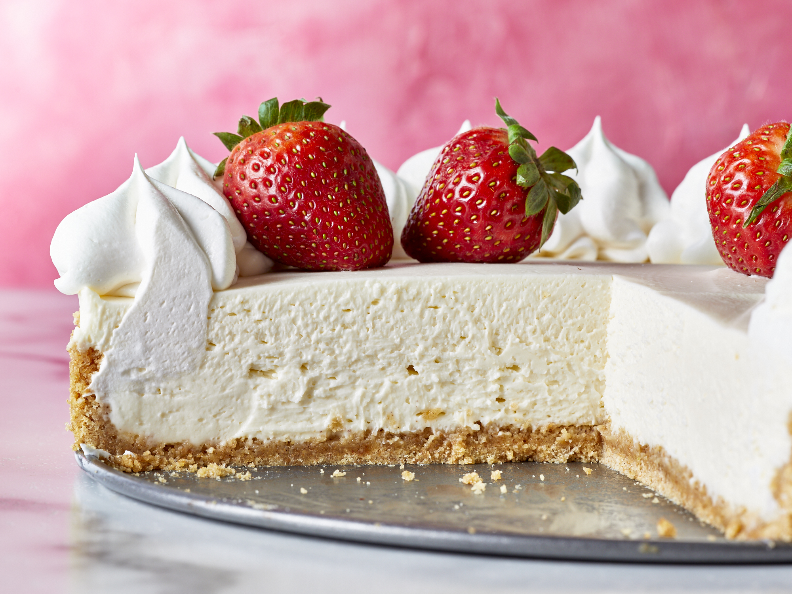
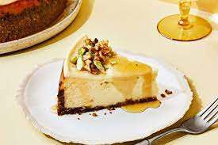
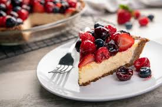
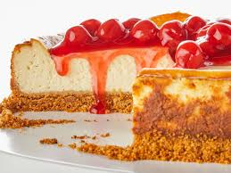

Unlike traditional cheesecakes that require baking, this type of cheesecake is set in the refrigerator and doesn't require any baking. It's usually made with cream cheese, whipped cream, and a sweet crust made from cookies or graham crackers.
Also known as "cotton cheesecake" or "soufflé cheesecake," this type of cheesecake has a light, fluffy, and jiggly texture. It's made with cream cheese, eggs, sugar, and cornstarch, and often has a delicate vanilla or citrus flavor.
Infused with fruit flavors, such as strawberry, raspberry, blueberry, or lemon, either in the filling or as a topping. It can have a creamy and tangy taste, with a hint of fruitiness.
This classic style of cheesecake